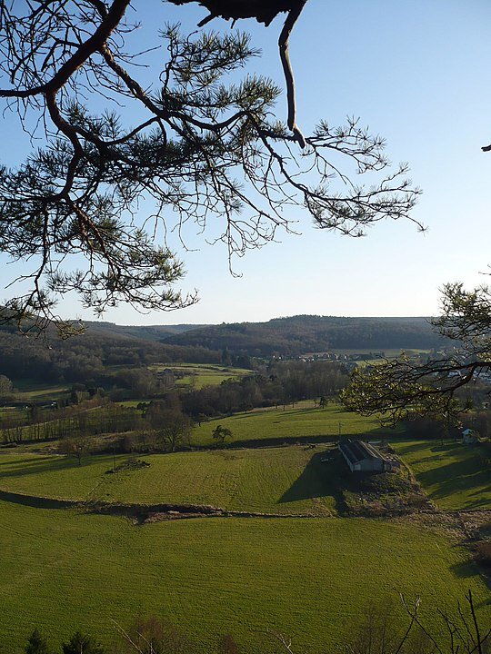
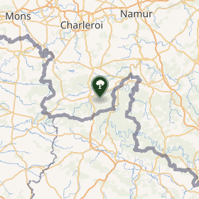

Autour du centre de l'Europe des 15


Parc Naturel Viroin - Hermeton
L' Histoire du Parc Naturel
Viroin - Hermeton
Le Parc naturel Viroin-Hermeton est une aire protégée de 48 000 ha en Belgique. Il est situé en province de Namur, s'étendant, à l'est de la ville de Couvin, jusque la frontière française.
Il comprend environ quatre cents phénomènes karstiques (grottes, adugeoirs, "fondrys"...), des collines calcaires et une végétation particulière comprenant une variété d'orchidées sauvages.
Historique
Le projet de sa création fut lancé en 1977 par les cercles des naturalistes de Belgique. À l'origine, le parc naturel reprenait les communes de Viroinval et de Doische. Celle-ci se retire le 18 décembre 2003. Le parc passa donc d'un peu plus de 20 000 hectares à 12 090.
Environnement

La partie nord du parc se situe en calestienne. On y retrouve des pelouses calcicoles, des collines calcaires (appelées tiennes), des grottes, des centaines de fissures de largeur variable dans le sol. Ces cavités, caractéristiques du parc, sont appelées fondry dans le parler local.
Les plus connus sont le Fondry des Chiens et le Fondry Matricolo à Nismes. Certains fondrys ou abannets font près de 100 mètres de long et plus de 20 mètres de profondeur. La zone contient des milliers d'orchidées sauvages qui attirent de nombreux papillons et autres insectes en mai et juin.
La partie sud se situe quant à elle est en Ardenne et est surtout recouverte de forêts de feuillus.
Le parc est arrosé par l'Eau Noire et l'Eau Blanche qui se rejoignent à Dourbes, au pied d'une falaise calcaire, la roche à l'Homme, pour former le Viroin.
Culture
Quatre musées sont situés dans le parc, tous à Treignes. Dans un château-ferme au centre du village, est installé un écomusée qui donne un aperçu des métiers traditionnels locaux tels que tonnelier, forgeron et sabotier.
Dans ce même village on retrouve le musée archéologique du Malgré-tout, un musée inspiré des écrits de l'écrivain wallon local Arthur Masson - l'Espace Arthur Masson - et dans l'ancienne gare internationale, un musée du train à vapeur.
On trouve également le Centre Marie-Victorin qui s'est installé dans ce parc dès l'année de sa fondation en 1958
Tourisme

Le Parc naturel est traversé par une ligne de chemin de fer au départ de la gare de Mariembourg qui se termine dans le village de Treignes.
Durant la belle saison, cette ligne est empruntée par de magnifiques trains à vapeur. Au sein du plus gros village du Parc naturel Nismes se niche un magnifique parc traversé par de nombreux canaux qui forment un large étang.
Tous ces espaces d'eau peuvent être parcourus en barques électriques. Parmi les huit villages du Parc naturel, Vierves est classé parmi les plus beaux villages de Wallonie comme Vierves. Et c'est à Oignies, en pleine forêt ardennaise (la forêt de Nismes) que l'on peut voir une superbe cathédrale de lumière, œuvre de Bernard Tirtiaux qui marque le centre géographique de l'ancienne Europe des 15.
Enfin la renommée du Parc naturel et de Viroinval tient à ses 300 kilomètres de chemins balisés qui serpentent la Calestienne, la vallée du Viroin et l'Ardenne.
Parc Naturel Viroin - Hermeton en Images